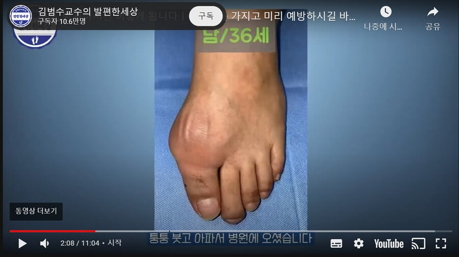
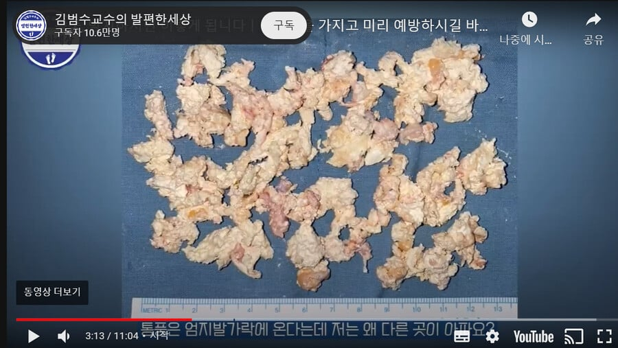
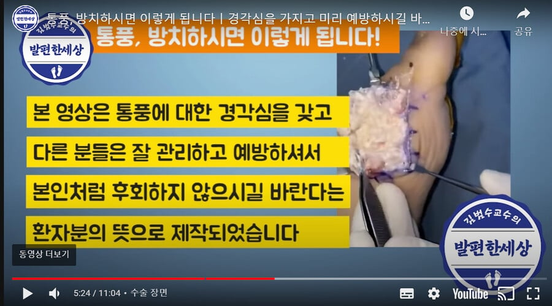

아니 ㅅㅂ 통풍 존나 아프다고 하는거 아니야? 저 지경까지 어떻게 방치할 수 있지
신발도 못신어서 김종국도 런닝맨에 슬리퍼 신고 나왔었잖아



아니 ㅅㅂ 통풍 존나 아프다고 하는거 아니야? 저 지경까지 어떻게 방치할 수 있지
신발도 못신어서 김종국도 런닝맨에 슬리퍼 신고 나왔었잖아
끼요옷
너무 무섭다 진짜로; 맥주 마시기가 꺼려지네....
와 영상에 xray사진 나오는데 요산에 뼈에 쌓여서 뼈에 구멍뚫림
뼈가 그냥 통째로 녹았네;;저건 복구가 되긴하나
영상에 수술장면도 그대로 나와있네 어우씨발ㅋㅋㅋ
존나 신기한게 아파 뒤질라해도 고기 술 식습관도 안고치고 약도 안먹는 인간들 있더라 ㅋㅋ
나는 제로음료는 액상과당아니여서 반년동안 물대신 제로음료ㅠ먹었었는데 통풍발작3번오고 병원가서 검사하니 요산수치 6.9나옴
의사가 말하길 제로음료와 통풍의 연관성은 아직 논문이 없어서 쉽게 판단하기 힘든데 그래도 끊으라고 했음
끊고나서 오른쪽 복숭아뼈? 쪽 튀어나온거 점차 줄어서 지금은 나름 멀쩡해지고 간간히 의사한테 논문소스관해서 진행상태 물어본다고 연락옴
약은 1주일만 먹고 그뒤로 안먹었는데 거진 반년동안 아무렇지 않음
한 논문중에 제로음료는 상관이 없대 문제는 제로음료의 단맛이 식욕을 돋궈서 더 많이먹게하거나 더 자극적인맛을 찾는대 제로음료는 아무 잘못이없어
그 논문 실험에선 물대신 먹고 실험하진 않았지
논문으로 따질꺼면 세부요소 따져야지
제로음료는 물 대신 먹는게 아니라 일반 음료 대신 먹으라고 제발 좀
물 먹어
물 대신 그걸..
6.9?? 여간 기합넘치는 수치가 아니였다...
도대체 왜 물대신 음료를 마심?
저정도면 뼈도 다 녹았겠다ㅠㅠ
저 정도면 걍 발 자르고 먹고 싶은거 원 없이 먹으면서 사는게 맞지않을까
다른곳에다시쌓임
죽어?
저게 심해지면 나중에 뼈는 흔적도 없이 사라진다더만.. 저정도 가려면 슬스 거의 문턱 아닌가 싶어서..
36에 저정도면 관리보단 그냥 유전탓임
유전탓 아님 담배갑에 폐암 사진 붙여봤자 담배 안끊죠?
통풍도 마찬가지임 환자 특징이 고집이 시발 존~나 쎄서
술드시면 안되요 식단 하셔야됩니다 의사가 뭘알어 좆까
아파도 술먹음 수술 했으니 또쳐먹음 뒤질때쯤 약먹고 또먹음
그런 성격이 유전인가 봄
유전탓맞음 매일 치킨맥주쳐먹어도 저렇게 안됨
유전탓은 맞는데 약잘먹고 식단잘하면 저지경은 안됨
그것도 맞지
저지경이라 오히려 유전아니냐 통풍환자가 다 저정도까지 가긴 힘들거같은데 ㅋㅋ
요즘은 약이 좋아져서 아무리 유전자가 지랄나도 약만 잘먹으면 저렇게 안됨
걸린놈들 보면 치킨맥주만 먹지 않음 식습관도 문제임
하.. 보고왓는데 끔찍햇ㅇ므
통풍안걸릴려면 단음료 제일줄이고
그다음 육류보다는 계란, 닭고기,유제품이 낫대
1n년차 환자로써 말하자면
퓨린이라는 새끼때문인데 뭐 가장큰 문제는 수분섭취 라서
맥주나 커피 같은거 존나마시는 데도 건강한 사람들은 그만큼 물을 잘마셔서라고 보면됨
수분섭취 안해서 생기는 성인병이 너무많아
통풍걸린놈중 요로결석 경험한사람 적지않을거임
다행이다 나 맥주 커피 존나 마시는데 물은 더 존나 마심 ㅋㅋㅋㅋㅋ
음료먹으려면 제로콜라랑 제로사이다나 주구장창 먹어라.. 제로 맥주도 있는데
아니.
물 먹어.
음료 먹지 말고.
저거 젊은나이에 걸린사람 중에 술 안좋아하는사람이 없던데 ㅋㅋ
걸려도 쳐먹더라
저사람수술하고잘걷나?
그래서 부먹임 찍먹임
나도 요산수치 6.3까지올라서 통풍발작 근근히나서 약으로 연명하다가 맥주아예끊고 소주 두어달에한번먹고 나머지식이요법은1도안하는데 수치싹내려가고 요근래몇년 발작난적한번도없음
튀김음식, 기름진거, 맥주, 내장
다안좋아하는것들이라
9점대엿는데 발작은 없었고 가끔 약간 관절 통증 정도 있었음
페브릭 처방받고 3-4점대로 떨어짐ㅋㅋ 통증도 싹 사라짐
통풍에 안좋다는거 좋아하긴했는데 요산 높은거보고 엄청 줄였는데도 오히려 수치는 올라감
의사말 들어보니 유전 영향이 크대
그냥 쳐먹고살아도 저정도는 절대 안된다
저런애들은 ㄹㅇ 인생 ㅆ창이라 니들이 아무리 노력해도 저렇게 못됨
탕수탕수열매 ㄷㄷㄷ
먹은탕수육이 그대로 ;;
2~3 회 통풍 발작. 이후 자이로릭 무조건 하루 딱 1알. 딱히 음식안가리고 10년째 발작 없음. 맥주도 가끔 마시고 운동하느라 단백질 많이 챙겨먹음.